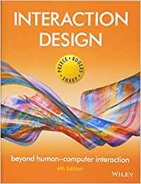

2020 봄학기
HCI 이론 및 실습
수업 개요
인간-컴퓨터 상호작용 (HCI: Human-Computer Interaction) 은 컴퓨터 과학, 공학, 심리학, 사회과학, 디자인 등 다양한 분야의 전문가들이 중요한 역할을 수행하는 융합 학문이다. 현대 사회에서
사람들은 컴퓨터를 일상 생활의 중요한 도구로 사용하면서 다양한 문제점들에 직면하곤 하는데, HCI는 시스템의 디자인과 컴퓨터 기술이 실제로 사용되는 과정에서 발생하는 문제점을 해결하는 방법론을 제시하는 것을 목표로
하고 있다.
이 수업에서 학생들은 먼저 HCI 분야에 대해 전반적인 이해를 하고, HCI에서 사용하는 다양한 방법론을 통해 문제를 해결하는 능력을 배우게 될 것이다. 그를 위해 디자인 방법론, 태스크 분석 기법, 다양한 평가
방법을 배우고, 좋은 디자인과 나쁜 디자인을 판단하는 방법을 학습한다.
| 담당교수 |
이준환 email: joonhwan@snu.ac.kr cell: 010-9212-4975 office: 16동 303호 (약속 시: 64동 405호) |
|---|---|
| 시간 | 월요일 오후 2:00-4:50 |
| 장소 | 15동 201호 |
| 온라인 강의 주소 |
회의 아이디 : 325-965-464 참가 URL : https://zoom.us/j/325965464 |
| 카카오톡 오픈채팅방 | https://open.kakao.com/o/g3TmF00b |
| TA | 김수민(soominkim@snu.ac.kr) |
강의 내용
- HCI의 overview 및 주요 토픽 소개
- HCI 방법론 학습
- 실제 프로젝트를 통한 방법론의 적용
교재
-

- Jenny Preece, Helen Sharp, Yvonne Rogers, Interaction Design, beyond human-computer interaction, 4th Edition, Wiley
- 기타 ACM SIGCHI 논문 (필요에 따라 제공)